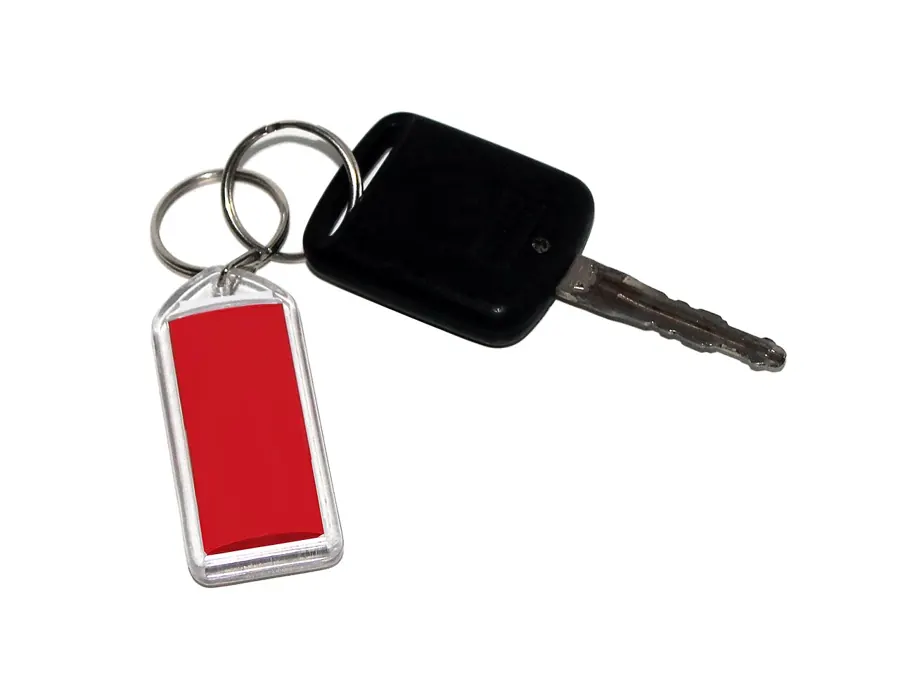

— carte : spécimen officiel du nouveau permis (données fictives), image de l'Agence Technique des Transports Terrestres (ATTT). Nouveau format depuis le 1er mars 2023 (décret gouvernemental n° 2021-510, art. 55) ; les anciens permis restent valables jusqu'à leur date d'expiration.البطاقة: نموذج رسمي للرخصة الجديدة (معطيات وهمية)، صورة الوكالة الفنية للنقل البري. شكل جديد منذ 1 مارس 2023 (الأمر الحكومي عدد 2021-510، الفصل 55)؛ وتبقى الرخص القديمة صالحة إلى تاريخ انتهائها.
1. Choisir la catégorie et vérifier l'âge1. اختيار الصنف والتثبت من السن
- B (voiture, 8 places passagers au plus, 3 500 kg au plus) : 18 ans. Avant 20 ans, voitures de 6 places au plus.
- A1 (cyclomoteur…) : 16 ans · A (moto) et H (agricole) : 18 ans · C, D1, B+E : 20 ans · D, C+E, D+E : 21 ans.
- C, C+E, D, D1 et B+E : il faut déjà le permis B et avoir fini les 2 ans de stage.
- Décret n° 2000-142, art. 2, 3, 6 et 10.
- B (سيارة، 8 مقاعد للركاب على الأكثر، 3500 كغ على الأكثر): 18 سنة. وقبل 20 سنة، سيارات بـ 6 مقاعد على الأكثر.
- A1 (دراجة نارية خفيفة…): 16 سنة · A (دراجة نارية) و H (فلاحي): 18 سنة · C و D1 و B+E: 20 سنة · D و C+E و D+E: 21 سنة.
- الأصناف C و C+E و D و D1 و B+E: يجب الحصول مسبقًا على رخصة B وإتمام فترة التربص (سنتان).
- الأمر عدد 2000-142، الفصول 2 و3 و6 و10.
2. Le dossier2. الملف
- Demande sur l'imprimé des services régionaux du ministère du Transport ;
- photocopie de la carte d'identité nationale et deux photos récentes ;
- certificat médical ;
- quittance des droits (payés avant chaque épreuve, non remboursés en cas d'absence).
- Une seule demande à la fois, dans un seul centre.
- Décret n° 2000-142, art. 11, 18, 19 et 20.
- مطلب على المطبوعة التي تسلّمها المصالح الجهوية لوزارة النقل؛
- نسخة من بطاقة التعريف الوطنية وصورتان حديثتان؛
- شهادة طبية؛
- وصل خلاص المعاليم (تُدفع قبل كل اختبار ولا تُسترجع في حالة الغياب).
- مطلب واحد فقط، في مركز واحد.
- الأمر عدد 2000-142، الفصول 11 و18 و19 و20.
3. L'examen : deux épreuves3. الامتحان: اختباران
- Épreuve théorique (le « code ») : règles de circulation, sécurité routière, secourisme, mécanique… Réussie, elle reste valable un an.
- Épreuve pratique en deux étapes : circulation sur route et manœuvres sur un terrain aménagé. Au plus 6 épreuves pratiques pendant l'année. Si une étape échoue, on repasse les deux.
- Après la réussite, l'examinateur remet un permis provisoire.
- Catégorie A1 : épreuve théorique seulement.
- Décret n° 2000-142, art. 21 à 24.
- الاختبار النظري («الكود»): قواعد الجولان، السلامة المرورية، الإسعاف، الميكانيك… وعند النجاح يبقى صالحًا سنة.
- الاختبار التطبيقي على مرحلتين: الجولان على الطريق والمناورات في فضاء مهيأ. على الأكثر 6 اختبارات تطبيقية خلال السنة. وإذا رسب المترشح في مرحلة يعيد المرحلتين.
- بعد النجاح، يسلّم الممتحن رخصة وقتية.
- الصنف A1: اختبار نظري فقط.
- الأمر عدد 2000-142، الفصول من 21 إلى 24.
À vérifier auprès de l'ATTT ou de votre auto-école : le nombre de questions de l'épreuve théorique (30 selon nos recherches) et le seuil de réussite (24), l'inscription en ligne et le contrat avec l'auto-école demandé depuis 2025 (selon la presse). Ces points ne figurent pas dans le décret de 2000.يجب التثبت لدى الوكالة الفنية للنقل البري أو مدرسة السياقة من: عدد أسئلة الاختبار النظري (30 حسب بحثنا) وعتبة النجاح (24)، والتسجيل عن بعد والعقد مع مدرسة السياقة المطلوب منذ 2025 (حسب الصحافة). هذه النقاط غير مذكورة في أمر سنة 2000.
4. Après : stage, validité, renouvellement4. بعد ذلك: التربص، الصلوحية، التجديد
- 2 ans de stage : 80 km/h au plus sur autoroute et hors agglomération.
- Validité (A1, A, B, B+E, H) : 10 ans jusqu'à 60 ans, 5 ans de 60 à 76 ans, 3 ans ensuite.
- Renouvellement : ancien permis, certificat médical, 2 photos, copie de la carte d'identité, quittance.
- Code de la route, art. 82 ; décret n° 2000-142, art. 15, 31 et 32 ; décret n° 2000-151, art. 12.
- سنتان من التربص: 80 كم/س على الأكثر على الطريق السيارة وخارج المناطق العمرانية.
- الصلوحية (A1 و A و B و B+E و H): 10 سنوات إلى سن 60، و5 سنوات من 60 إلى 76، و3 سنوات بعد ذلك.
- التجديد: الرخصة القديمة، شهادة طبية، صورتان، نسخة من بطاقة التعريف، وصل الخلاص.
- مجلة الطرقات، الفصل 82؛ الأمر عدد 2000-142، الفصول 15 و31 و32؛ الأمر عدد 2000-151، الفصل 12.
→ S'entraîner avec l'examen blanc← التدرب بالامتحان التجريبي